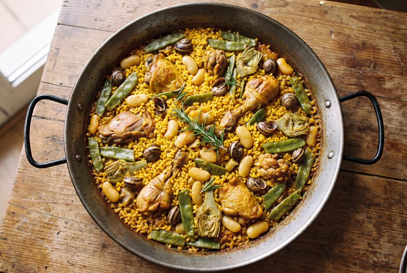
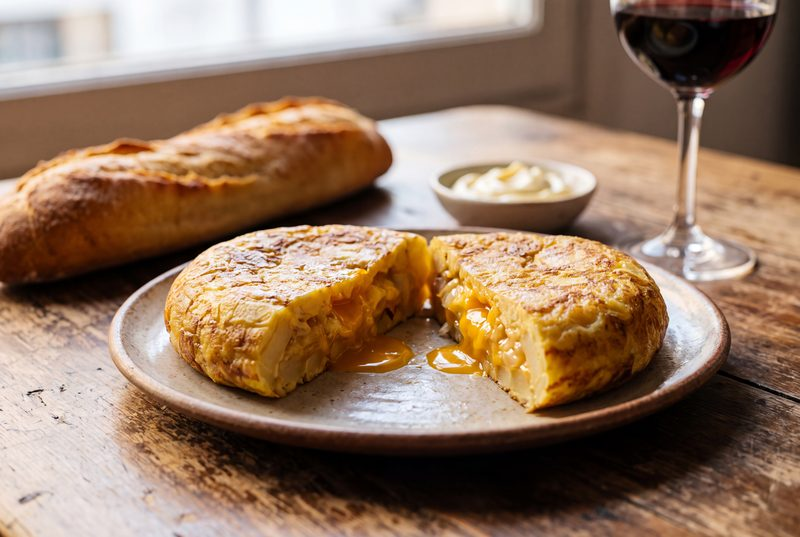
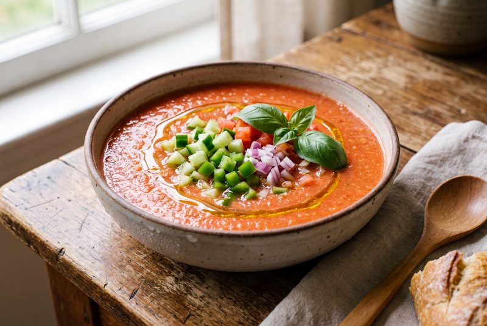

Arroces
Paella valenciana
El arroz más famoso de nuestra cocina, con su sofrito y su socarrat.
Ver la recetaRecetas tradicionales españolas explicadas con calma, paso a paso y sin prisa. Para cocinar bien sin complicarse.
Un pequeño recetario con los clásicos que nunca fallan. Elige una sección y ponte el delantal.

El arroz más famoso de nuestra cocina, con su sofrito y su socarrat.
Ver la receta
Jugosa por dentro y cuajada al punto. El debate de la cebolla, resuelto.
Ver la receta